Kunst der Renaissance – in der Werkstatt eines Meisters – Lesespurgeschichte mit Rätselaufgaben (Klasse 7)

Lesespur: Abstrakte Kunst: Bilder ohne Gegenstand – Lesespurgeschichte mit Rätseln (Klasse 7)
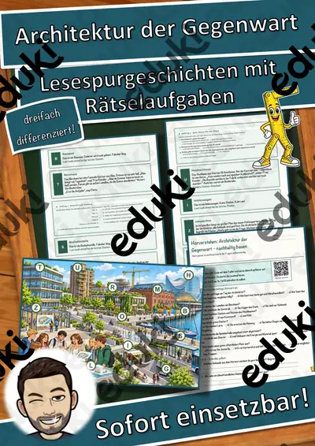
Lesespur: Architektur der Gegenwart: nachhaltig bauen – Lesespurgeschichte mit Rätseln (Klasse 10)

Lesespur: Bildsprache der Werbung: wie Bilder überzeugen – Lesespurgeschichte mit Rätseln (Klasse 10)

Lesespur: Blätterdruck und Herbstfarben – Lesespurgeschichte mit Rätseln (Klasse 1)

Lesespur: Collage und Materialbild: Kunst aus Papier, Stoff und Knöpfen – Lesespurgeschichte mit Rätseln (Klasse 5)

Lesespur: Comic und Bildgeschichte: Erzählen in Bildern – Lesespurgeschichte mit Rätseln (Klasse 6)

Lesespur: Das Bauhaus: Design für alle – Lesespurgeschichte mit Rätseln (Klasse 10)

Lesespur: Das Porträt: Gesichter zeichnen und verstehen – Lesespurgeschichte mit Rätseln (Klasse 7)

Lesespur: Das Stillleben: Dinge ins Bild setzen – Lesespurgeschichte mit Rätseln (Klasse 6)

Lesespur: Der Farbkreis – Lesespurgeschichte mit Rätseln (Klasse 5)

Lesespur: Die Perspektive – Lesespurgeschichte mit Rätseln (Klasse 7)

Lesespur: Druckgrafik: Holzschnitt und Linoldruck – Lesespurgeschichte mit Rätseln (Klasse 7)

Lesespur: Ein Tag im Kunstmuseum – Lesespurgeschichte mit Rätseln (Klasse 3)

Lesespur: Expressionismus: Farbe als Gefühl – Lesespurgeschichte mit Rätseln (Klasse 10)

Lesespur: Farben selbst herstellen: vom Pigment zur Tube – Lesespurgeschichte mit Rätseln (Klasse 7)
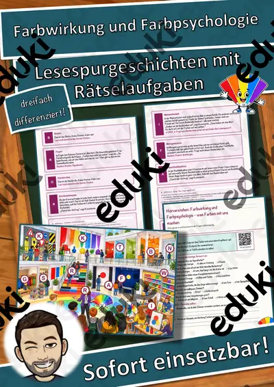
Lesespur: Farbwirkung und Farbpsychologie: was Farben mit uns machen – Lesespurgeschichte mit Rätseln (Klasse 8)
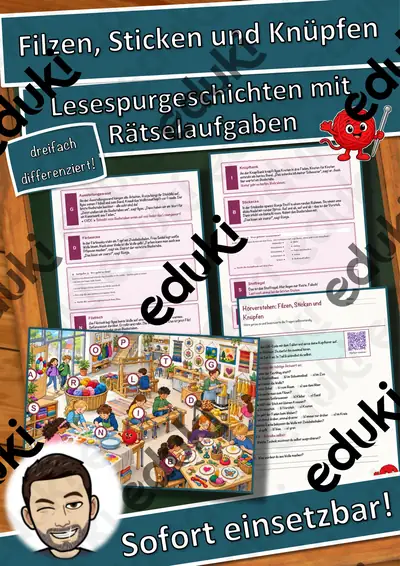
Lesespur: Filzen, Sticken und Knüpfen – Lesespurgeschichte mit Rätseln (Klasse 3)

Lesespur: Formen in der Natur – Lesespurgeschichte mit Rätseln (Klasse 1)

Lesespur: Fotografie: der Bildaufbau – Lesespurgeschichte mit Rätseln (Klasse 9)

Lesespur: Fröbelsterne und Papiersterne falten – Lesespurgeschichte mit Rätseln (Klasse 4)

Lesespur: Gefäße aus Ton: Aufbaukeramik – Lesespurgeschichte mit Rätseln (Klasse 5)

Lesespur: Handnähen: Säckchen für den Adventskalender – Lesespurgeschichte mit Rätseln (Klasse 5)

Lesespur: Höhlenmalerei: die ersten Künstler – Lesespurgeschichte mit Rätseln (Klasse 5)
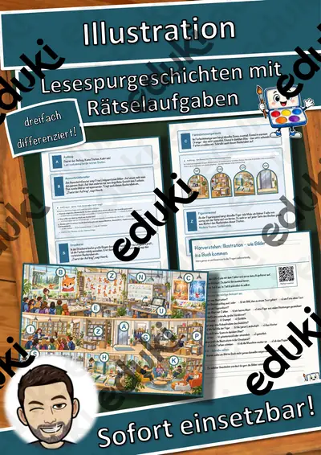
Lesespur: Illustration: wie Bilder ins Buch kommen – Lesespurgeschichte mit Rätseln (Klasse 6)

Lesespur: Impressionismus: Malen im Freien – Lesespurgeschichte mit Rätseln (Klasse 9)

Lesespur: Kalligrafie: die Kunst der schönen Schrift – Lesespurgeschichte mit Rätseln (Klasse 7)

Lesespur: Krippenbau: eine Weihnachtskrippe entwerfen und gestalten – Lesespurgeschichte mit Rätseln (Klasse 8)

Lesespur: Kunst der Antike: Vasen und Tempel – Lesespurgeschichte mit Rätseln (Klasse 6)
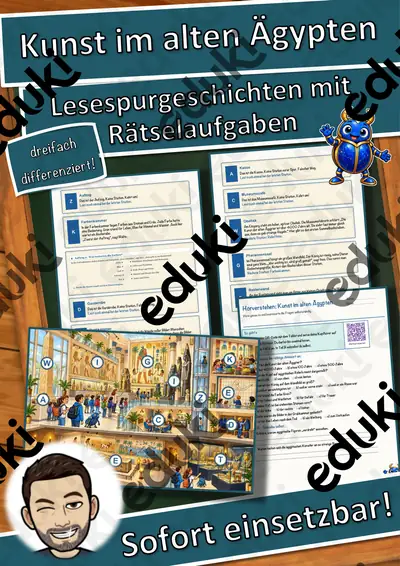
Lesespur: Kunst im alten Ägypten – Lesespurgeschichte mit Rätseln (Klasse 6)

Lesespur: Kunst im öffentlichen Raum: Denkmäler und mehr – Lesespurgeschichte mit Rätseln (Klasse 9)

Lesespur: Künstlerinnen: vergessen und wiederentdeckt – Lesespurgeschichte mit Rätseln (Klasse 9)

Lesespur: Land Art: Kunst aus Naturmaterialien – Lesespurgeschichte mit Rätseln (Klasse 3)

Lesespur: Landschaftsmalerei: Natur im Bild – Lesespurgeschichte mit Rätseln (Klasse 8)

Lesespur: Licht und Schatten: Körper plastisch zeichnen – Lesespurgeschichte mit Rätseln (Klasse 8)
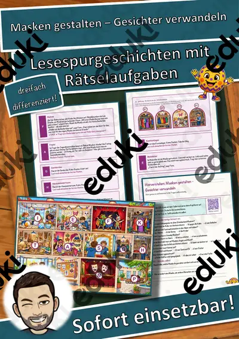
Lesespur: Masken gestalten: Gesichter verwandeln – Lesespurgeschichte mit Rätseln (Klasse 5)

Lesespur: Mein Traumhaus: Architektur für Kinder – Lesespurgeschichte mit Rätseln (Klasse 3)

Lesespur: Mobiles: Kunst im Gleichgewicht – Lesespurgeschichte mit Rätseln (Klasse 6)

Lesespur: Mosaik: Bilder aus Steinchen – Lesespurgeschichte mit Rätseln (Klasse 3)
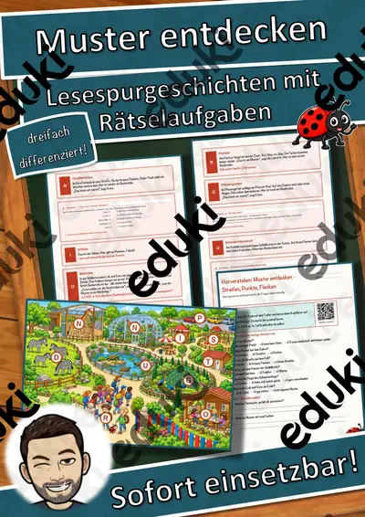
Lesespur: Muster entdecken: Streifen, Punkte, Flecken – Lesespurgeschichte mit Rätseln (Klasse 1)

Lesespur: Paul Klee: mit Linien spazieren gehen – Lesespurgeschichte mit Rätseln (Klasse 3)

Lesespur: Plakat und Typografie: Gestalten mit Schrift und Bild – Lesespurgeschichte mit Rätseln (Klasse 8)

Lesespur: Pop Art: Kunst aus dem Alltag – Lesespurgeschichte mit Rätseln (Klasse 9)

Lesespur: Produktdesign im Alltag: vom Problem zum Prototyp – Lesespurgeschichte mit Rätseln (Klasse 9)
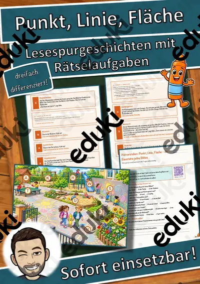
Lesespur: Punkt, Linie, Fläche: die Bausteine jedes Bildes – Lesespurgeschichte mit Rätseln (Klasse 1)
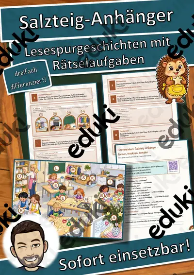
Lesespur: Salzteig-Anhänger: formen, trocknen, bemalen – Lesespurgeschichte mit Rätseln (Klasse 1)

Lesespur: Scherenschnitt und Silhouetten – Lesespurgeschichte mit Rätseln (Klasse 3)
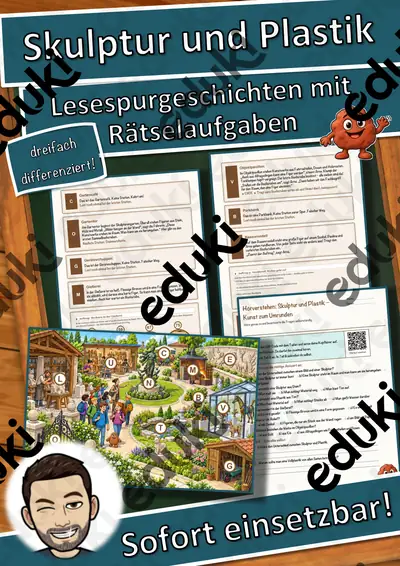
Lesespur: Skulptur und Plastik: Kunst zum Umrunden – Lesespurgeschichte mit Rätseln (Klasse 6)

Lesespur: Street Art und Graffiti: Kunst im Stadtraum – Lesespurgeschichte mit Rätseln (Klasse 9)
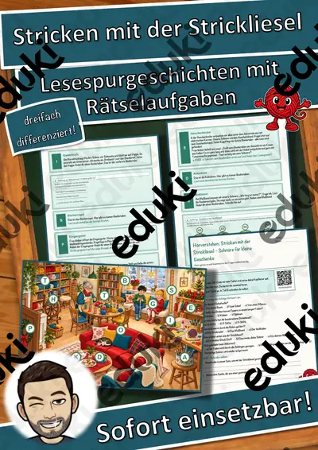
Lesespur: Stricken mit der Strickliesel: Schnüre für kleine Geschenke – Lesespurgeschichte mit Rätseln (Klasse 3)

Lesespur: Surrealismus: Bilder aus dem Unbewussten – Lesespurgeschichte mit Rätseln (Klasse 10)

Lesespur: Tiere in der Kunst – Lesespurgeschichte mit Rätseln (Klasse 1)

Lesespur: Trickfilm und Daumenkino: wie Bilder laufen lernen – Lesespurgeschichte mit Rätseln (Klasse 6)
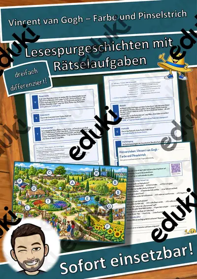
Lesespur: Vincent van Gogh: Farbe und Pinselstrich – Lesespurgeschichte mit Rätseln (Klasse 8)

Lesespur: Warme und kalte Farben – Lesespurgeschichte mit Rätseln (Klasse 3)

Lesespur: Wassily Kandinsky: wenn Farben klingen – Lesespurgeschichte mit Rätseln (Klasse 5)

Lesespur: Weben am Webrahmen: Kette, Schuss und Muster – Lesespurgeschichte mit Rätseln (Klasse 3)

Lesespur: Wolken, Wind und Wetter malen – Lesespurgeschichte mit Rätseln (Klasse 1)

Materialpaket Lesespurgeschichten Kunst Klasse 1: 7 Lesespuren mit Rätselaufgaben, dreifach differenziert
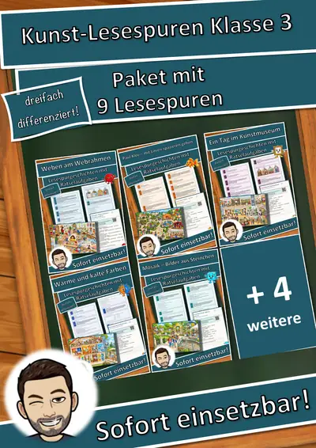
Materialpaket Lesespurgeschichten Kunst Klasse 3: 9 Lesespuren mit Rätselaufgaben, dreifach differenziert
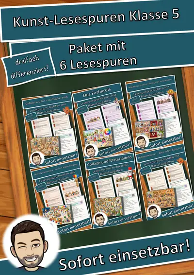
Materialpaket Lesespurgeschichten Kunst Klasse 5: 6 Lesespuren mit Rätselaufgaben, dreifach differenziert

Materialpaket Lesespurgeschichten Kunst Klasse 6: 8 Lesespuren mit Rätselaufgaben, dreifach differenziert

Materialpaket Lesespurgeschichten Kunst Klasse 7: 6 Lesespuren mit Rätselaufgaben, dreifach differenziert